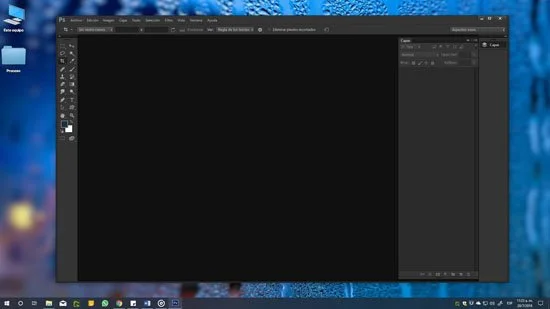

¿Que es el hardware y software?
No creo que hoy exista alguien que desconozca que hadware y software son dos cosas completamente difrentes. Sin duda, el
INDICE DE CONTENIDOhardwarey software son insuperables tanto que el uno que es completamente inutil sin el otro
- ¿En qué consiste una computadora?
- ¿Qué es hardware?
- El hardware básico
- El hardware complementario
- Cómo se compone el hardware?
- Gabinete
- Hipset
- CPU
- Memoria RAM
- Memoria ROM
- Unidades de almacenamiento
- Dispositivos de Salida
- Dispositivos de Entrada
- Dispositivos mixtos
- ¿Qué es el software?
- Conceptos de Software
- Clasificación del software
- Tipos de software
- Tipos de software según su licencia
- Aplicaciones para Smartphones
- Firmware: Un intermediario entre el hardware y el software
- Inconvenientes y problemas con el Firmware
- Actualizaciones de Firmware
- Los efectos de la actualización del Firmware
- Actualizaciones fundamentales de Firmware
- Cómo actualizar el Firmware: El temor de muchos
Que vas a encontrar aqui: hadware y software dela computadora. Tipos de hadware: componente de hadware. Tipos de software. La licencia de software. Aplicacines para smartphones. Firware.
Prosesador
No creo que hoy exista alguien que desconozca que hardware y software son dos cosas completamente diferentes. Sin dudas, el hardware y el software son inseparables, tanto que el uno es completamente inútil sin el otro. Se podría decir sin temor a equivocarse que el hardware está completamente inerte hasta que es movido por el software. Y hay mucho más que debes conocer.
¿En qué consiste una computadora?
Básicamente una computadora consiste de dos partes: el hardware y el software. El hardware es un término genérico utilizado para designar a todos los elementos físicos que lo componen,es decir, gabinete, monitor, motherboard, memoria RAM y demás. El software es todo aquello que le proporciona a la computadora las instrucciones necesarias para realizar una determinada función. Entre ellos se destacan el sistema operativo, juegos, controladores de dispositivos, programas de usuario y demás.
¿Qué es hardware?
Así como la computadora se subdivide en dos partes, el hardware que la compone también, de este modo puedes encontrar el llamado: hardware básico hardware complementario.El hardware básico
Agrupa a todos los componentes imprescindibles para el funcionamiento de la PC como motherboard, monitor, teclado y mouse, siendo la motherboard, la memoria RAM, la memoria ROM y la CPU los componentes más importantes del conjunto
El hardware complementario
Por otro lado, el hardware complementario, que es todo aquel componente no esencial para el funcionamiento de una PC como impresoras, cámaras, pendrives y demás. Procesador
Cómo se compone el hardware?
También puedes encontrar una diferenciación adicional entre los componentes de la PC, y se encuentra dada por la función que estos cumplen dentro de la misma. La función de estos componentes suele dividirse en tres categorías principales: entrada, salida y almacenamiento de datos. Los componentes de esas categorías están relacionados a través de un conjunto de cables o circuitos llamado bus con la unidad central de proceso (CPU), el microprocesador que maneja a la computadora y le suministra capacidad de cálculo.
En los siguientes párrafos podrás conocer en detalle algunos de ellos:
Gabinete
El gabinete es el contenedor donde se alojan todos los componententes internos de los computadores: placa madre, procesador, coolers, fuente de alimentación, placa de audio, tarjetas gráficas y de red, disco duro, unidades de almacenamiento ópticas, memorias RAM y ROM, y demás partes internas. Al gabinete, normalmente se conectan los periféricos de entrada y de salida utilizando puertos y conectores del tipo: VGA, HDMI, Serial, USB, PS2, RJ11, etc.Chipset
Integrado en la motherboard, el chipset permite el tráfico de información entre el microprocesador y el resto de los componentes que conforman la PC.CPU
Este dispositivo tiene la tarea de interpretar y ejecutar las instrucciones recibidas del sistema operativo, además de administrar las peticiones realizadas por los usuarios a través de los programas.Memoria RAM
La Memoria RAM o Memoria de Acceso Aleatorio (Random Access Memory) es donde la computadora almacena los programas, datos y resultados procesados por la CPU, lo que permite su rápida recuperación por parte del sistema, brindado así una mejor performance.
Memoria ROM
Es un tipo de memoria no volátil que "recuerda" todo lo necesario para que la PC pueda arrancar aunque haya estado desconectada de la energía. Ver más sobre la Memoria ROMUnidades de almacenamiento
Son todos aquellos dispositivos destinados al almacenamiento de los datos del sistema o de usuario, es decir, el lugar físico en donde se ubica el sistema operativo, los programas y los documentos del usuario Unidades de Almacenamiento
Estos pueden ser discos rígidos (o disco SSD), unidades de CD, DVD o Blu Ray, pendrives o discos externos extraíbles.Dispositivos de Salida
Son los dispositivos encargados de mostrarle al usuario los resultados de sus operaciones. Este grupo comprende monitores, impresoras y todo aquello que sirva al propósito de ofrecerle al usuario la posibilidad de ver el resultado de su trabajo.
Dispositivos de Salida
La pantalla
La pantalla cambia la información generada por la computadora en información visual. Las pantallas suelen tener una de las siguientes formas: una pantalla de cristal líquido (LCD, siglas en inglés) o pantalla LED, aunque en la actualidad las opciones se han multiplicado. Estos monitores se conectan al gabinete del computador mediante un conector que se encuentra en la placa de video (GPU).
La impresora
Matriz de puntos: Las impresoras toman textos e imágenes de la computadora y los imprimen en papel. Las impresoras matriciales utilizan minúsculos alambres que golpean una cinta entintada creando caracteres.
Láser: Las impresoras láser emplean haces de luz para trazar imágenes en un tambor y luego toman pequeñas partículas de un pigmento negro, llamado tóner.
Ink Jet: También existe un tercer tipo, llamado impresora Ink Jet o de Chorro de tinta, la cual es la impresora más usada en la actualidad por precio y prestaciones, estando su funcionamiento basado en traspasar tinta a alta presión desde unos cartuchos situados en la misma.
Aquí podras conocer todos los tipos de impresoras.
Dispositivos de Entrada
Dispositivos que permiten el ingreso de información a la PC. Ejemplos de ello son los teclados, los mouses y otros dispositivos
Dispositivos de Salida
El lápiz ópticoEntre los elementos físicos tenemos, por ejemplo, un lápiz óptico, que es un puntero con un extremo fotosensible que se utiliza para dibujar sobre el monitor o para seleccionar información en la pantalla pulsando un botón en el lápiz óptico o presionando el lápiz contra la superficie de la pantalla.
El lápiz tiene sensores ópticos que identifican la fracción de la pantalla por la que se está pasando.El mouse
Un mouse o ratón, es un dispositivo apuntador diseñado para ser tomado como una mano.
Cuenta en su parte inferior con un dispositivo detector (generalmente una bola o láser) que permite al usuario controlar el movimiento del cursor en la pantalla deslizando el mouse por una superficie plana o pad.
Para seleccionar objetos o elegir instrucciones en la pantalla, el usuario pulsa un botón del mouse, ya sea el derecho o izquierdo.
El joystick
Un joystick es un dispositivo formado por una palanca que se mueve en varias direcciones y dirige un cursor u otro objeto gráfico por la pantalla de la computadora.
El tecladoUn teclado es un dispositivo parecido a una máquina de escribir, que posibilita al usuario introducir textos e instrucciones.
Algunos teclados poseen teclas de función especiales o dispositivos apuntadores integrados, como trackballs (bolas para mover el cursor) o zonas sensibles al tacto que permiten que los movimientos de los dedos del usuario dirijan el cursor en la pantalla.
Dispositivos mixtos
Estos son componentes que entregan y reciben información, y en este grupo podemos mencionar tarjetas o placas de red, módems, y puertos de comunicaciones, entre otros.
Te recomendamos leer todo sobre la historia del hardware en un gran post dedicado a las Generaciones de las computadoras.
¿Qué es el software?
El software de una computadora es todo aquel código ordenado de tal manera que le permite al usuario ordenarle a la misma que realice una tarea. También se deben subdividir en diversas categorías en base a las funciones que realizan en el sistema.
Conceptos de SoftwareSoftware es una secuencia de instrucciones que son interpretadas y/o ejecutadas para la gestión, redireccionamiento o modificación de un dato/información o suceso.
Virus
Software también es un producto, el cual es desarrollado por la ingeniería de software, e incluye no sólo el programa para la computadora, sino que también manuales y documentación técnica.
Un software de computadora está compuesto por una secuencia de instrucciones, que es interpretada y ejecutada por un procesador o por una máquina virtual. En un software funcional, esa secuencia sigue estándares específicos que resultan en un determinado comportamiento.
En tu computadora, todos los programas que usas son software: Windows, Outlook, el Firefox, Google Chrome, Microsoft Edge y los antivirus, entre otros. Incluso los virus pueden ser categorizados como software.
Un software puede ser ejecutado por cualquier dispositivo capaz de interpretar y ejecutar las instrucciones para lo cual es creado.
Cuando un software está representado como instrucciones que pueden ser ejecutadas directamente por un procesador decimos que está escrito en lenguaje de máquina.
La ejecución de un software también puede ser realizada mediante un programa intérprete, responsable por entender y ejecutar cada una de sus instrucciones. Una categoría especial y notable de intérpretes son las máquinas virtuales, como la Máquina virtual Java (JVM).
El dispositivo más conocido que dispone de un procesador es la computadora. Existen otras máquinas programables, como los teléfonos celulares y máquinas de automatización industrial, entre muchos otros dispositivos
Clasificación del softwareEl software puede clasificarse en:
Software de Sistema
- Software de Sistema Software de Aplicación
Este grupo comprende el sistema operativo, controladores de dispositivos, utilitarios de sistema y toda aquella herramienta que sirva para el control específico de las características de la computadora.
Software de AplicaciónSe le llama software de aplicación a todos aquellos programas utilizados por los usuarios para la concreción de una tarea, y en este grupo puedes encontrar software del tipo ofimático, aplicaciones de diseño gráfico como Photoshop, de contabilidad y de electrónica, por solo citar una pequeña fracción de todas las categorías de aplicaciones que puedes encontrar en el mercado.
Tipos de softwareEl software, también llamado programa o aplicación, además del hardware, es una de las piezas fundamentales de cualquier computadora o sistema de cómputo tales como PCs de escritorio, netbooks, smartphone, notebooks o tablets.
Sin estos programas, la computadora no sería más que un aparato que no es capaz de hacer nada por sí mismo, salvo decorar un escritorio.
A partir de este punto trataremos de hacer una revisión sobre los distintos tipos de programas y aplicaciones que se pueden encontrar en el mercado:
- Sistemas operativos Procesadores de texto Planillas de cálculo Planillas de cálculo Programas de CAD Diseño gráficos Suites Suites
Existen muchos tipos de software, cada uno desarrollado con un fin específico, y a lo largo de los años se ha establecido una categorización que define la tarea que cumple.
A partir de aquí podrás conocer cómo se diferencian los diferentes tipos de programas y algunos ejemplos de las aplicaciones más conocidas.
Sistemas OperativosEste tipo de software controla la computadora, y sin él, la PC no es capaz de interpretar las acciones que le pides, por ejemplo cortar o pegar.
Los ejemplos más importantes de sistemas operativos son Microsoft Windows, en cualquiera de sus versiones, es decir Windows XP, Windows Vista, Windows 7 o Windows 8, Windows 10, Apple MacOS o Linux en su distribuciones Mandriva, Ubuntu, Kubuntu y Debian, por citar sólo los más importantes.

Pero también existen otros tipos de sistemas operativos exclusivos para otros dispositivos como smartphones y tablets. Los mejores ejemplos de ellos son Symbian, Android, iOS, Windows Phone y BlackBerry OS, entre otros.
Sistema Operativos
Procesadores de TextoSustituyen, con muchísimas ventajas, a la ya muy obsoleta máquina de escribir, pudiéndose escribir textos, memorándum, cartas, contratos, informes, correspondencia en general, y cualquier otro documento que sea necesario mostrar en papel o enviar a través de correo electrónico.
Con un procesador de textos, puedes utilizar diversos recursos para la composición de un documento tales como: subrayado, negrita, fuentes de letras de diversos tipos, colores, corrección ortográfica, inserción de textos, imágenes, tablas y muchas otras opciones que lograrán un aspecto profesional para tu escrito.
Los ejemplos más citados de procesador de textos son Microsoft Word, Libre Writer, WordPad, Abiword o Kword.
Planillas de CálculoEste tipo de aplicaciones sirven para hacer todo tipo de cálculos y operaciones matemáticas, siendo bastante útiles para diversas aplicaciones tales como hojas de pago, contabilidad, cuentas a pagar y a cobrar, cálculos estadísticos, balances, gráficos estadísticos y muchas otras posibilidades para el ámbito de la contabilidad en la empresa o el hogar.
Ejemplos de ellos son Microsoft Excel, Lotus y Office Calc.
Bases de DatosEstos programas son utilizados para almacenar información tal como registro de clientes, proveedores, materiales, productos, a los efectos de poder tener un seguimiento eficaz de stocks o movimientos de cualquier índole.
Las aplicaciones más importantes de este ámbito son Microsoft Access, FoxPro y Office Base.
Programas de CAD
CAD (Computer Aided Design), se refiere a los programas de diseño asistido por computadora que son muy utilizados por arquitectos, ingenieros, diseñadores y todo profesional que se dedique a la confección de planos de cualquier tipo. Muy utilizados en arquitectura, ingeniería y electrónica entre otros.
El ejemplo más significativo de esta categoría es AutoCAD de la empresa Autodesk, pero también podemos contar con Blender, de código abierto y gratuito.
Diseño GráficoEste tipo de programas son los utilizados regularmente en cualquier estudio de diseño gráfico en donde se compongan revistas, libros, y todo tipo de material impreso.
Básicamente se pueden dividir en dos tipos: Composición y retoque y manipulación de imágenes, habiendo otros programas que complementan estas acciones.
Los programas más utilizados en este ámbito son Adobe Illutrator, Adobe InDesign, Adobe Photoshop, siendo también usados, pero en menor medida CorelDraw! y Corel Photo Paint, entre otros.
SuitesEste tipo de programas suelen integrar varias aplicaciones que cumplen una función diferente en un mismo paquete.
Las más conocidas suites son Microsoft Office, Open Office o Adobe Suite. Las primeras dos integran software enfocado al trabajo en la oficina, con procesador de texto, planilla de cálculo y otros, mientras que el tercero se encuentra dirigido al profesional del ámbito gráfico.
Navegadores (Browsers)Quizás uno de los programas más utilizados en la actualidad, dado el furor imparable de Internet y las redes sociales. Estos programas te sirven para conectarte y navegar a través de Internet.
Los navegadores más populares son Microsoft Edge, Mozilla Firefox, Google Chrome, Safari y Opera. Cabe destacar que todos ellos son programas gratuitos.
Tipos de software según su licencia
Como vimos, existen varias formas de clasificar el software por su utilidad. Sin embargo, hay una forma más de catalogarlo, y es quizás hasta un poco más importante
Se trata del tipo de licencia que tiene dicho software, de la cual dependerán las funciones del programa a las que queremos acceder.
- Software propietario o de pago Software gratuito Software libre o de código abierto
En este punto, podemos decir que coexisten varios tipos de licencias de software, desde las más restrictivas, dentro del mundo del software propietario, hasta las que nos permiten hasta incluso modificarlo para que lo puedas adaptar a tus necesidades, como muchos programas de código abierto.
Pero antes de comenzar a enumerar los diferentes tipos de licencias de software que existen, lo mejor es recordar que básicamente una licencia de software es un contrato entre el desarrollador y el cliente, en el cual se exponen por escrito todas las condiciones y restricciones que debemos respetar al usar dicho software.
Todos los programas de software las tienen, independientemente si se trata de aplicaciones comerciales o gratuitas y libres.
A partir de este punto, en este artículo nos centraremos en los tres más conocidos, y que engloban tanto a las apps gratuitas como Gimp o Spotify como a las comerciales, como Windows o Photoshop.
Software propietario o de pago
Se llama software propietario a todo aquel software o programa de computación que se comercializa con licencias que restrinjan su uso en cualquier forma, como por ejemplo poder instalarlo en más de una computadora, modificarlo o hasta incluso almacenarlo en otros soportes que no sean los originales.
Además de esto, el desarrollador no hace público el código fuente de su aplicación.
Además de Windows o Photoshop, otros ejemplos de software propietario son Acrobat Reader y Microsoft Edge. Como notamos, algunos programas pueden ser gratuito a pesar de tener una licencia restrictiva, lo que lo convierte básicamente en freeware
Software gratuitoBásicamente, el concepto del software freeware hace referencia a cualquier programa de computación que se distribuya sin que el usuario tenga que pagar por su licencia, es decir, la posibilidad de poder utilizarlo por todo el tiempo que el usuario desee sin tener que pagar ni un centavo.

Sin embargo, el hecho de que sea gratuito no significa que puedas hacer lo que quieras con el programa, ya que el autor ha dejado bien claro en la licencia de uso cuales son las obligaciones, restricciones y derechos de uso de esta pieza de software en particular.
Ejemplos bien claros de freeware son el Antivirus Avast y el navegador Chrome, ente muchos otros.
Software libre o de código abiertoSegún los fundamentos de la Free Software Foundation, se denomina como software libre a todo aquel software que se pueda ejecutar, copiar, distribuir, estudia y modificar para mejorar sus usos o características.
Este tipo de aplicaciones pueden estar disponibles de forma gratuita en muchos sitios web, sin embargo, esto no significa que no pueda tener un precio.
Si bien podemos llegar a pagar por alguna pieza de software libre, siempre mantendremos las libertades promulgadas por la FSF con respecto a los derechos del usuario de poder modificar o usar el software como mejor le parezca.
En síntesis, el software libre te ofrece la posibilidad de poder utilizar el software de la manera en que mejor se adapte a tus necesidades, sin que esto sea obligación de tener que pagar o informar a ninguna autoridad competente en el tema.
Aplicaciones para SmartphonesUna categoría especial de software son los programas exclusivamente diseñados para los sistemas operativos incluidos en los teléfonos inteligentes actuales. En el mercado existen varios sistemas operativos para teléfonos móviles, como pudimos ver más arriba, no siendo compatibles las aplicaciones diseñadas para Android con Windows Phone, por dar un ejemplo. Estas apps, como también se conoce al software para teléfonos celulares, te ofrecen un abanico muy importante de posibilidades, ya que con ellas puedes contar con ayuda para cualquier tipo de tarea que desees emprender con tu teléfono. Para ello existen en el mercado aplicaciones para oficina, lectores de correo, juegos y muchas otras, sólo es cuestión de buscar en las tiendas oficiales de cada sistema operativo y seleccionar la que más te convenga.
Firmware: Un intermediario entre el hardware y el software
Quienes solemos utilizar diferentes dispositivos electrónicos compuestos por hardware y software, seguramente hemos oído mencionar más de una vez el término Firmware, y la importancia que este elemento posee dentro del funcionamiento de los equipos, como así también la necesidad de actualizar esta herramienta con las nuevas versiones disponibles.
Firmware
En principio cabe destacar que el término Firmware comenzó a difundirse a finales de la década de los sesenta, y que básicamente definía el microcódigo residente en la memoria RAM, encargado de implementar distintas instrucciones de la computadora. Gracias a las características de este elemento, el mismo podía ser modificado con los cambios necesarios para establecer nuevas instrucciones que posteriormente serían ejecutadas por el CPU. Con el paso de los años, el Firmware se convirtió en un elemento cotidiano, del cual disponen la mayoría de los dispositivos electrónicos digitales, ya que permite que sea posible el envío de diferentes series de instrucciones a los distintos componentes electrónicos de un equipo, como es el caso de la PC, en la cual el Firmware se puede llegar a encargar de un sinfín de instrucciones específicas para el procesador, el BIOS (Basic Input Output System), diversas aplicaciones y demás. Debido a que el Firmware, que como su nombre lo indica se trata de programación en firme, y se caracteriza por ser un bloque de instrucciones para determinados propósitos, suele definírselo como un elemento de software del equipo. No obstante, al encontrarse incorporado a la propia electrónica de los dispositivos, también es correcto asegurar que se trata de un componente de hardware del mismo. En realidad, el Firmware, que reside en memorias de tipo no volátil tales como la ROM, EEPROM o Flash, es el intermediario entre el dispositivo y la electrónica del mismo, que se encarga de controlar y enviar las instrucciones externas del equipo y asegurar que éstas se efectúen correctamente.
En la actualidad, debido a la necesidad imperiosa de la existencia de Firmware en prácticamente todos los dispositivos que posean circuito integrado, es posible encontrar este tipo de programación en infinidad de equipos. Entre ellos se pueden incluir impresoras, monitores, reproductores, unidades ópticas, periféricos, y por supuesto también en componentes como microprocesadores, memorias y demás. Incluso el propio BIOS de la computadora es considerado un Firmware, ya que es el encargado de activar las distintas instrucciones para el encendido de la PC y ejecutar los mandos para el inicio de los entornos del sistema operativo. Otro es el caso de los periféricos que acompañan tu nuestra PC, ya que cada uno de ellos trabaja con un Firmware especial para tareas específicas, el cual suele no venir incluido dentro del dispositivo, sino que se carga en el momento en que el mismo es conectado y recibe la orden de arranque por intermedio del sistema operativo de la computadora. Muchas veces este Firmware viene incluido en los drivers que acompañan a dichos accesorios.
Inconvenientes y problemas con el FirmwarePuedes encontrar mucha información sobre el firmware en este artículo: Qué es Firmware?
El mayor inconveniente de la mayoría de los Firmware que incluyen los diferentes equipos electrónicos es la falta de actualización automática, lo que puede provocar ciertas fallas en su funcionamiento habitual. Es por ello, que constantemente se lanzan nuevas versiones de diferentes Firmware, el cual en general deberá ser actualizado de manera manual por el usuario.

Tal es el caso de lo que sucede con muchos reproductores de Divx existentes en el mercado, que para lograr modificaciones en sus diversas funciones, como por ejemplo la visualización de subtítulos con tipografías más grandes que con la configuración provista de fábrica o mayor soporte de códecs para archivos multimedia, es necesario descargar de distintos sitios de Internet los nuevos Firmware actualizados, y efectuar de forma manual la instalación de este nuevo sistema de programación en firme. Lo mismo sucede con las actualizaciones de Firmware de otros equipos, tales como teléfonos celulares, computadoras de abordo de automóviles, reproductores de música y demás.
Actualizaciones de FirmwareLas actualización de los Firmware puede provenir de las empresas fabricantes de los equipos, como sucede por ejemplo con las publicadas por la compañía Apple para su iPhone. Pueden llegar a ser desarrolladas por usuarios comunes, actividad a la que se la denomina "Hackear" el Firmware, que en los últimos años se ha centrado mayormente en la modificación de los Firmware correspondientes a reproductores de video y música de gama baja.
Los efectos de la actualización del FirmwareEn general, los Firmware sufren modificaciones que responden a mejorar la funcionalidad del mismo, y de esta manera ofrecer un rendimiento superior del equipo que lo contiene. A pesar de que muchos dispositivos actuales incluyen la función de actualización de Firmware de manera automática, lo cierto es que una gran cantidad de equipos no han incorporado dicha funcionalidad. Por eso muchas veces es el usuario quien deberá encargarse de realizar esta tarea de forma manual, pero extremadamente sencilla.
Actualizaciones fundamentales de FirmwareLa actualización del Firmware representa un cambio drástico y beneficioso para el equipo, ya que no sólo permite la actualización del propio dispositivo, sino que además puede llegar a ampliar las características del mismo, ofreciendo una mayor funcionalidad.

En general, cuando los fabricantes lanzan un nuevo Firmware actualizado para alguno de sus equipos, la actualización debe realizarse sin lugar a dudas, ya que en la mayoría de los casos se trata de Firmware modificados que incluyen la corrección de errores que pudiera presentar el dispositivo en su funcionamiento habitual. En ocasiones son los propios usuarios los que desarrollan las modificaciones necesarias de los Firmware, como es el caso de las reiteradas actualizaciones de Firmware de reproductores de Divx de mesa de gama baja, que mediante la actualización ofrece la posibilidad de reproducir archivos comprimidos con códecs que anteriormente el equipo no soportaba. En ocasiones la nueva versión del Firmware puede llegar a añadir funciones y mejorar las preestablecidas, ofreciéndote características más modernas para el uso del dispositivo. Este suele ser uno de los motivos más importantes por el cual los usuarios deciden actualizar el Firmware de sus dispositivos, ya que a través de esta técnica, se logran modernizar diversos aspectos, estos pueden variar desde el simple cambio cosmético de su interfaz gráfica hasta complejos valores de configuración de su funcionamiento.
Te recomendamos leer: Que es una interfaz? >>
Cómo actualizar el Firmware: El temor de muchosA pesar de las grandes ventajas que representa la actualización del Firmware, muchos usuarios prefieren no realizar esta operación, por temor a causar un daño irreversible en el dispositivo. La única manera en que puedes llegar a causar un daño irreversible en el dispositivo durante la actualización de su Firmware es utilizando una versión incorrecta del mismo, o bien que la instalación del nuevo Firmware se viera interrumpida por cualquier motivo. Si bien se trata de una operación delicada, que puede conllevar al desperfecto permanente del equipo, lo cierto es que tomando los recaudos necesarios, utilizando el Firmware adecuado y llevando a cabo los pasos detallados para realizar la actualización, mediante esta operación lograrás actualizar tus equipos, añadirle mayor cantidad de funciones y mejorar la compatibilidad de formatos.